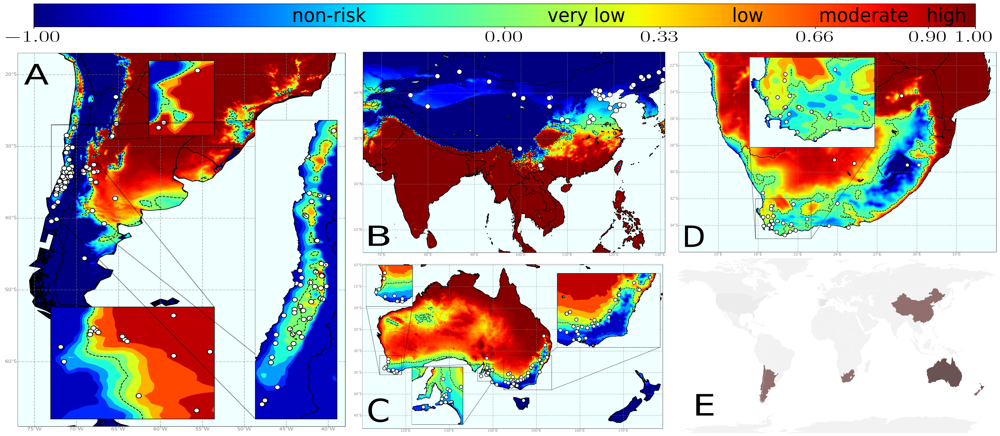
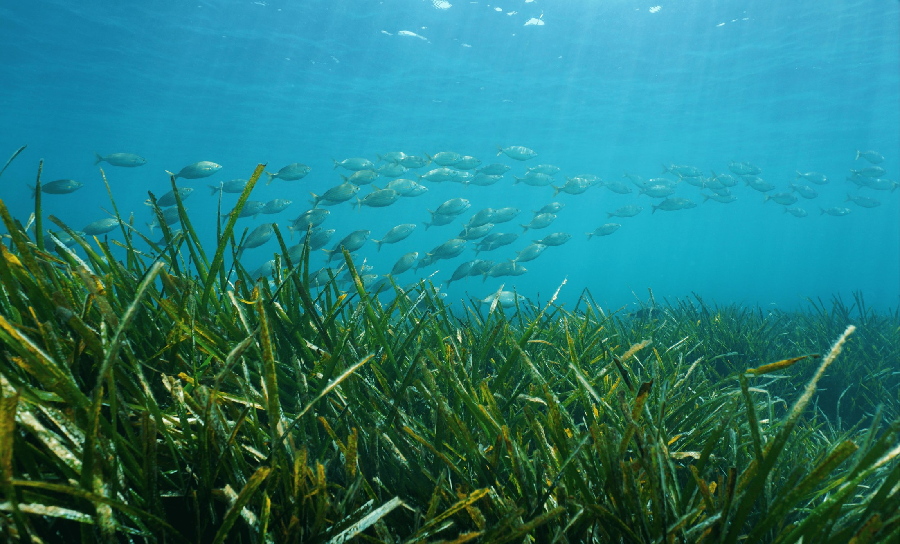
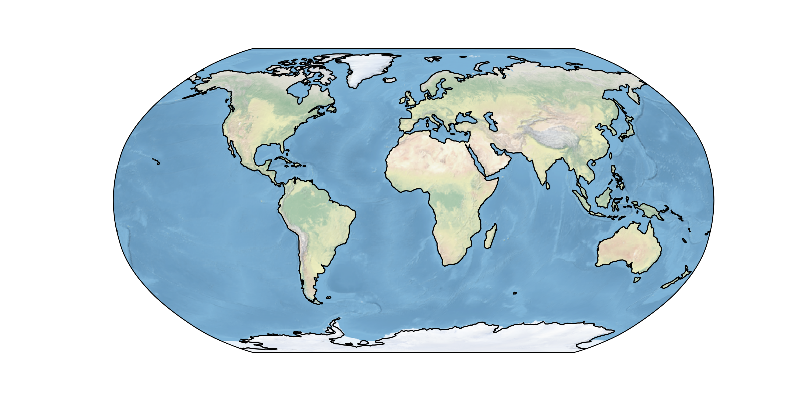

2026
Ecological networks balance connectivity with flexibility to perturbations
bioRxiv
Research
My work connects mechanistic theory and large-scale ecological data. The systems differ—communities, epidemics, coral reefs, seagrass meadows, drylands—but the recurring question is how structure and environmental forcing shape ecological response.
01
Stability & resilience
How does ecological structure determine whether populations and communities absorb, amplify or reorganize after perturbation?
I study the links between demographic structure, interaction architecture and ecological resilience. Recent work ranges from structured community matrices and ecological networks to demographic responses under different perturbation regimes and the role of rare events.
Selected work
bioRxiv
bioRxiv
Ecology Letters
Trends in Ecology & Evolution
02
Climate & disease
How do climate, host biology and vector dynamics interact to determine when and where disease can emerge?
This research line connects mechanistic epidemiology with climate and geospatial data. I develop models across scales—from vector seasonality and within-host pathogen progression to global risk mapping—with a long-running focus on Xylella fastidiosa and Pierce’s disease.

Selected work
bioRxiv
Scientific Reports
Scientific Reports
Proceedings of the Royal Society B: Biological Sciences
03
Spatial ecology
What can ecosystem geometry, fragmentation and self-organized spatial patterns tell us about the processes that generate resilience?
I use spatially explicit models and large-scale spatial data to connect ecological pattern with process. Current systems include coral reefs, Posidonia oceanica meadows and dryland vegetation, with an emphasis on general spatial regularities and resilience indicators.

Selected work
biorxiv
biorxiv
arxiv
Global Change Biology Communications
04
AI & remote sensing
How can machine learning and Earth-observation data turn sparse ecological observations into robust, transferable maps?
I combine satellite imagery, geospatial data and deep learning to map marine habitats and reconstruct ecological variables. The objective is not AI for its own sake, but scalable ecological observation that remains reliable when transferred across locations and conditions.

satellite → representation → mapSelected work
Ecological Indicators
Scientific Reports
Across themes